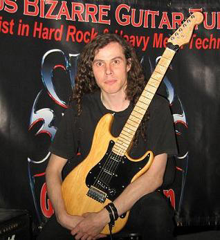
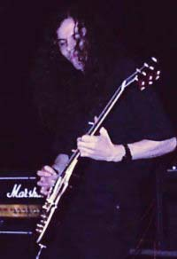

About
Circus Bizarre head tutor: Jon Kershaw
Jon has a wealth of experience both as a guitarist and a tutor. He is a graduate of London University (honours), the Academy of Contemporary Music, Guildford (Dist.) and the Brighton Institute of Modern Music (Dist.) Jon has played with numerous rock orientated bands, mostly recently the acclaimed Black Sabbath tribute band Sabbra Cadabra. As a tutor, Jon's unique style has proved successful both in this country, in London , the South West and the South East, as well as abroad (Jon was part of a volunteer team teaching in deprived regions in South Africa with the Music for Africa Appeal).
Jon has also appeared regularly as a guest on TotalRock radio for his specialist knowledge on rock and heavy metal music.
